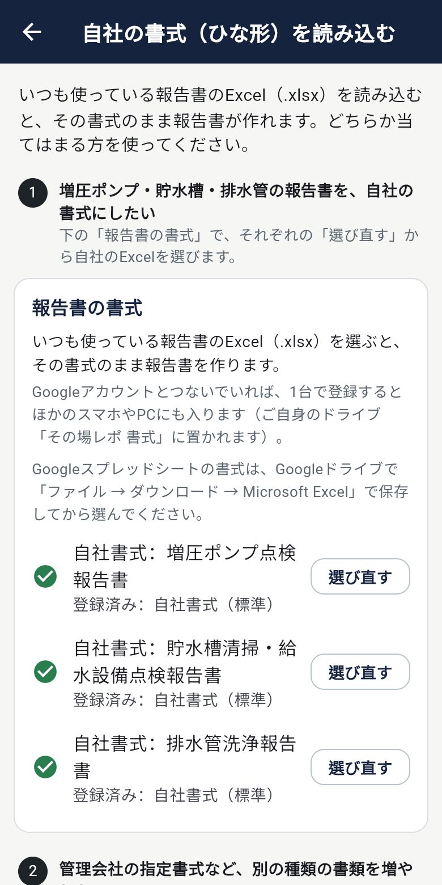
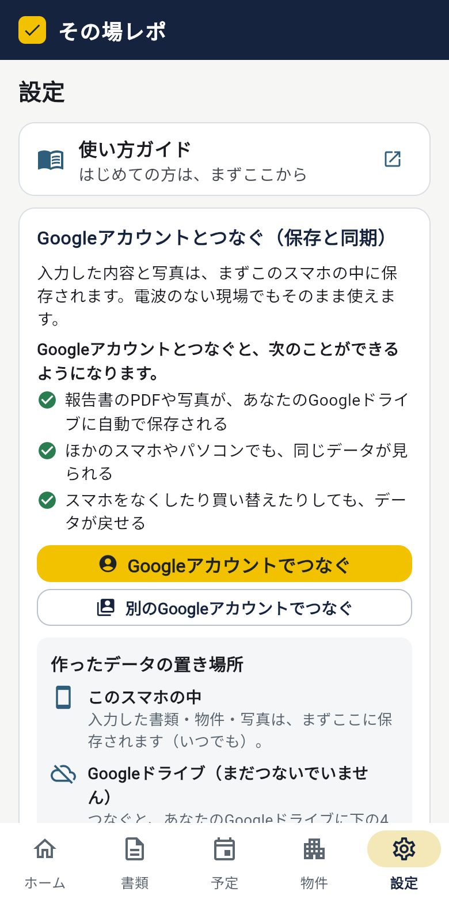

ホーム ／ 自社アプリ
点検・清掃の報告書アプリ
現場で入力して、その場で報告書。
「その場レポ」は、点検や清掃の結果をスマホで入力すると、いつもの自社書式（Excel）のまま報告書とPDFができあがるアプリです。事務所に戻ってから書き写す手間がなくなります。
月額300円税込・最初の14日間は無料・いつでも解約できます
iPhone・Android・パソコンデータは 自分のGoogleドライブ に保存

FEATURES
できること



報告書づくり
- 写真は枠に合わせて自動で貼り付け
- 横長のページは横向きA4で印刷
- 許可証・資格証を最後に載せられる
現場で使いやすく
- 電波のない場所でも入力できる
- 点検の予定と物件をまとめて管理
- 断水・作業のお知らせ（掲示用PDF）も作れる
データは自分の手元に
- スマホの中と、自分のGoogleドライブに保存
- ほかのスマホやパソコンでも同じデータ
- 点検の内容や写真は、当方のサーバーに送りません
START
使いはじめ方
インストールは不要です。アプリのページを開いて、ホーム画面に置くだけでアプリのように使えます。
iPhone（Safari）
- Safariで sonoba-repo.vercel.app を開く
- 下の「共有」ボタンを押す
- 「ホーム画面に追加」を押す
Android（Chrome）
- Chromeで sonoba-repo.vercel.app を開く
- 右上の「︙」メニューを押す
- 「ホーム画面に追加」または「アプリをインストール」を押す
iPhone・Androidとも、アプリストアからのインストールは不要です。Googleアカウント（Gmailのアドレス）が必要です。スプレッドシートを使ったことがなくても大丈夫です。
料金
月額300円（税込）
はじめての方は最初の14日間無料。期間中に解約すれば料金はかかりません。お支払いはクレジットカード（Stripe）。解約はアプリの設定からいつでもできます。